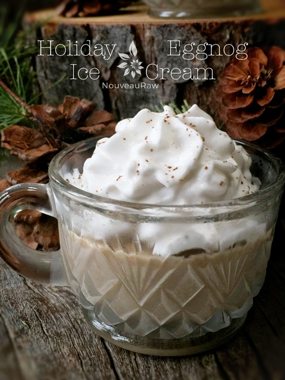

Holiday Eggnog | Vegan
This year, I finally (!) tried my hand at raw, vegan eggnog. I always used to enjoy the eggy version, so I am not sure why I waited this long to play around with a raw vegan version. Better late than never, I always say.
After combining all the ingredients in the blender and whipping it into a creamy eggnog consistency, I walked throughout the house, giving taste tests to my visiting family. I needed some serious feedback.
First in line was my mom, she asked for three big gulps and stated that she loved it. I then tracked down my little sister and said, “Here, sweetie, give this drink a try for me.” She took a sip and got a disgusted look on her face. “Oh NO, I asked, is something wrong with it????”
She looked at me with lips curled and said, “It’s gross… tastes just like eggnog!” I did a little eggnog-success-dance and exclaimed, “Wonderful! Just what I wanted to hear.” She looked confused as I pranced off.
Lastly, I found Bob (my dear husband) and told him that I created raw, vegan eggnog for him. I held my breath as he took a drink. A smile slowly spread across his lips as he shook his head in approval and said it tasted great. Shew. It felt good to breathe again. hehe
I made this eggnog in two different ways. At first, I tried it with water instead of almond milk. It still tasted good, but the almond milk gave it a nice body and overall flavor, so that is my recommendation. You can use either raw almonds or cashews for the nut source. Cashews made it even creamier. To sweeten the eggnog, I used dates, lucuma powder, and maple syrup. You can omit and substitute as you see fit, but it will taste different than what I created.
Make sure that you double-check your dates for pits. I am always extra careful that I remove the pits, but I will be darned if one doesn’t sneak past me once in a while like today. :) Trust me, you will know. It will either lock up the blades in the blender, or it will sound like you are polishing a rock in a rock tumbler. If this happens to you, turn the blender off and pour the batter through a mesh nut milk bag to sift out the pieces.
You can make this eggnog a day in advance, and in fact, it tastes even better when it has a chance to rest and chill, but it isn’t required if time is an issue. Enjoy and Happy Holidays! amie sue
Yields 4 cups
- 2 cups raw almond milk, see below
- 1/2 cup raw almonds or raw cashews, soaked 2+ hours
- 1 large frozen banana
- 4 large Medjool dates
- 1 Tbsp cold-pressed coconut oil
- 1 Tbsp raw lucuma powder
- 1 Tbsp raw coconut nectar or maple syrup
- 2 tsp vanilla extract
- 1/2 tsp freshly grated nutmeg (grated on a Microplane)
- 1/2 tsp ground Ceylon cinnamon
Preparation:
- Soak the nuts of choice for at least 2+ hours, drain, discard the soak water, and set aside.
- To make the almond milk, I blended 1 cup of raw almonds along with 2 cups of water.
- Once thoroughly blended, I squeezed it through a nut bag.
- You can read more here on how to make nut milk if you are new to it. I just wanted to share the measurements that I used for this exact recipe so you could achieve the same consistency. Rinse the blender.
- To the blender, add the almond milk or cashews, banana, dates (make sure all pits are removed), coconut oil, lucuma, sweetener, vanilla, nutmeg, and cinnamon. Blend for 1-3 minutes, or until completely smooth and free of any grit.
- You can drink immediately or pour into a container with an airtight lid and chill.
- Should keep for about 2-3 days. Be sure to shake the container after it has sat in the fridge.
In the mood for ice cream? Try my Raw Vegan Holiday Eggnog Ice Cream!

© AmieSue.com